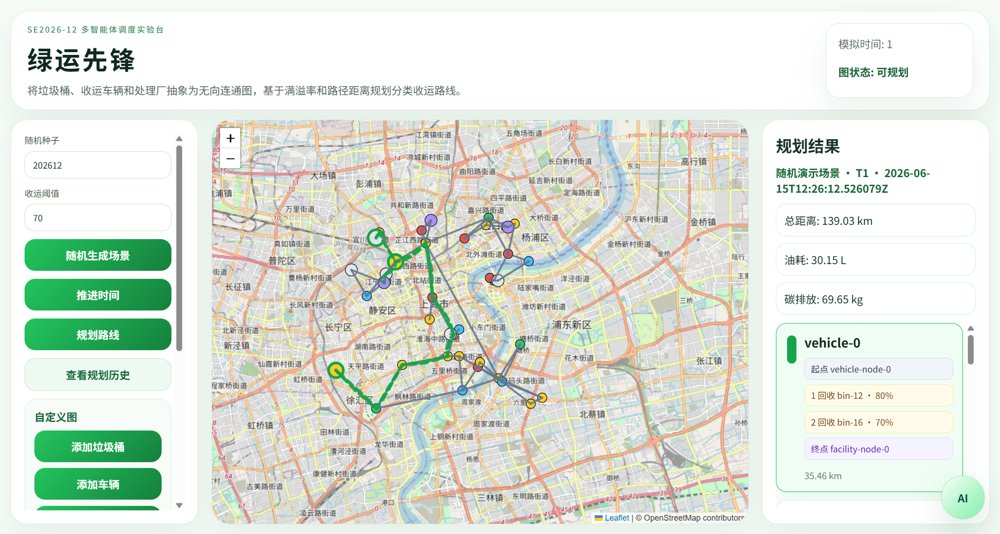
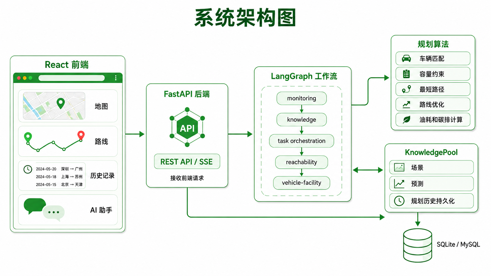
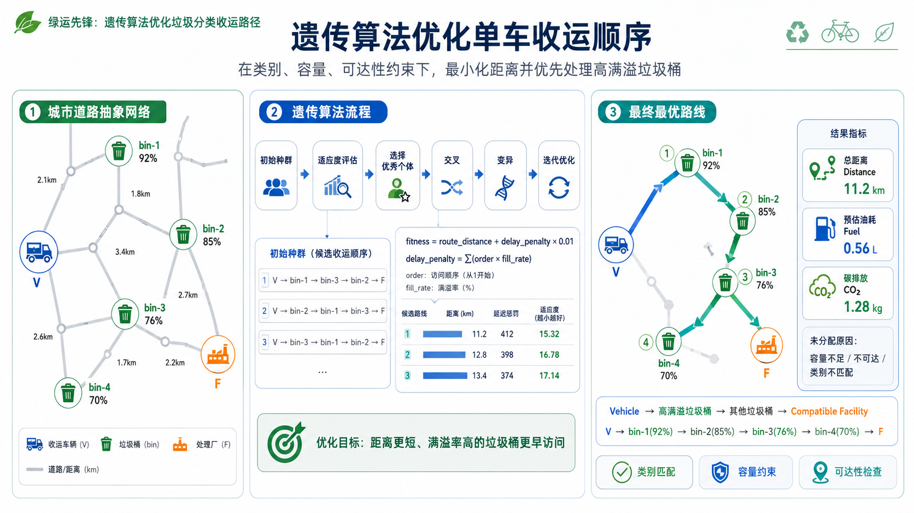
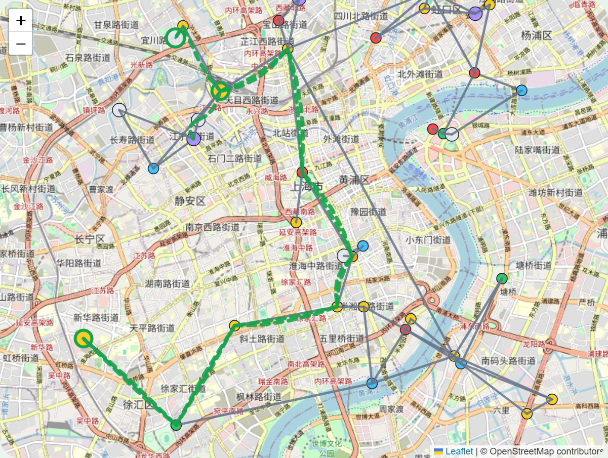

软件工程课程大作业 · 汇报
绿运先锋
垃圾分类收运 多智能体路径优化系统。把垃圾桶、收运车辆与处理厂抽象为协作图节点， 在分类、容量、可达性、满溢时序与碳排放约束下，规划可解释、可复现的多车收运路线。

系统主界面 · 地图 + 规划结果面板GREEN
AGENT
AGENT
软件工程课程大作业 · 汇报
垃圾分类收运 多智能体路径优化系统。把垃圾桶、收运车辆与处理厂抽象为协作图节点， 在分类、容量、可达性、满溢时序与碳排放约束下，规划可解释、可复现的多车收运路线。

系统主界面 · 地图 + 规划结果面板Agenda
点击任意条目可直接跳转到对应章节。
01 / 问题背景
这是一类车辆路径问题（VRP），但比普通最短路多了分类合规、容量、可达性与满溢优先级—— 收得太晚会溢出，收得太多走冤枉路，则油耗与碳排放上升。
垃圾桶位置 / 满溢率 / 容量 / 类别、道路边权、车辆能力与油耗、处理厂接收范围。
Agent 编排：预测满溢 → 筛选待收运 → 类别分组 → 可达性分析 → 车辆分配与路线优化。
每车收运顺序、完整路径节点、总距离 / 油耗 / 碳排放，以及未分配点位的原因。
02 / 系统架构

架构：前端 → FastAPI → LangGraph → 规划算法 → KnowledgePool03 / 多智能体任务编排
04 / 路径规划实现 A
(任务数, 距离, 随机扰动)，兼顾负载均衡。estimated_volume = round(bin.capacity × fill_rate / 100, 3)
selected = min(candidates, key=(任务数, 距离, random))
05 / 路径规划实现 B · 核心
当某辆车分配到 多于 2 个垃圾桶时启用遗传算法，否则回退贪心排序。
fitness = route_distance + delay_penalty × 0.01
delay_penalty = Σ (visit_order + 1) × fill_rate

道路网络 → 进化搜索 → 最优收运顺序06 / 输出指标与可视化
path_node_ids。fuel = distance × fuel_per_km | carbon = fuel × 2.31 kg/L

单车路线 · 方向箭头 + 停靠顺序07 / AI 规划助手
08 / 工程保障与方法
9 个能力规范 · 8 次归档变更，每次含 proposal / design / tasks，决策可追溯。
场景 / 满溢历史 / 预测 / 规划记录，支持复盘与"时间回溯"恢复。
同 seed + 场景 → 完全一致的预测与路线，便于演示与回归。
09 / 创新点与难点
贪心分配（哪辆车）+ 遗传算法排序（什么顺序）解耦，约束清晰、易解释。
未分配任务归因 unreachable / capacity / category，而非简单丢弃。
距离→油耗→碳排放贯穿规划，紧扣"绿色低碳"主题。
难点：随机连边易产生孤立点。方案：近邻主干 + 75% 概率补边，先连通再加密。
难点：最短未必最优。方案：适应度内置延迟惩罚，让高满溢桶尽早被收。
难点：多车共用道路重叠。方案：二次贝塞尔曲线偏移，分流不串色。
10 / 总结与展望
绿运先锋把垃圾分类收运推进为一套多智能体调度流程：感知满溢、按类编排、约束分配、进化优化、 还原路径并量化碳排放，全程可追溯、可对话、可回溯。
接入 OSM 真实路网与 IoT 满溢传感，用真实行驶距离替代坐标近似。
里程 / 碳排放 / 及时性帕累托前沿，让决策者按偏好选解。
引入强化学习与在线重调度，应对临时新增任务与车辆故障。
Thank you
绿运先锋把垃圾分类收运从静态地图，推进到可解释、可复现、可优化的多智能体调度流程。
感谢聆听，欢迎老师与同学批评指正。
代码仓库：github.com/Amane-fan/green-agent · SE2026-12 第 12 组